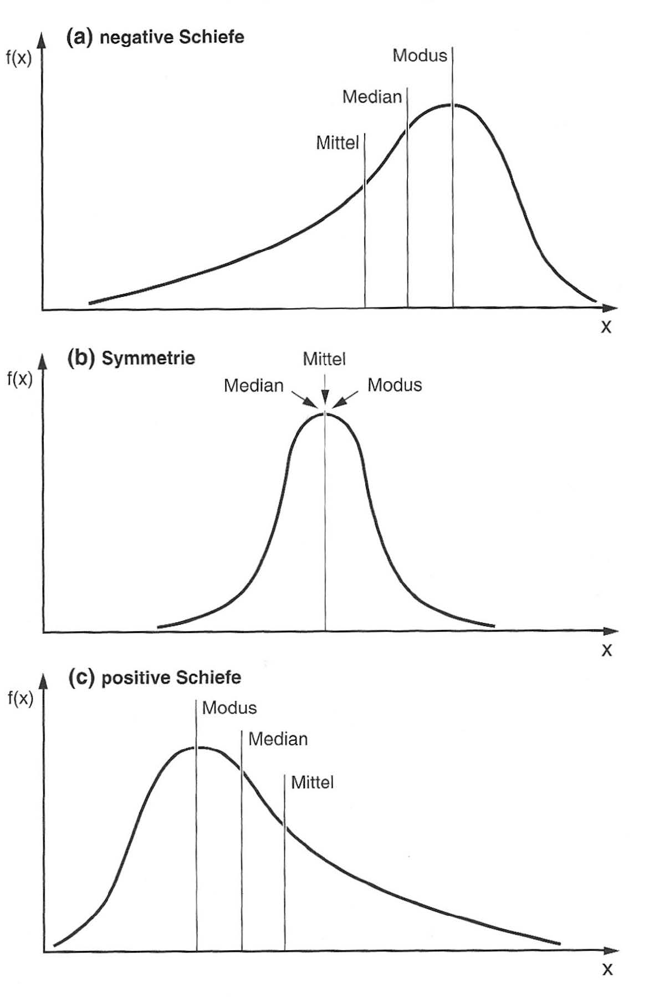

# Population erstellen
population <- rnorm(100000, mean = 0, sd = 10)
population_sd <- sqrt(sum((population - mean(population))^2) / length(population))
# Viele Stichproben ziehen, aber mit kleinerer Stichprobengröße
n_samples <- 1000
sample_size <- 10 # kleinere Stichprobengröße
mean_sd_n <- 0
mean_sd_n_minus_1 <- 0
for(i in 1:n_samples) {
sample_data <- sample(population, sample_size)
mean_sd_n <- mean_sd_n + sqrt(sum((sample_data - mean(sample_data))^2) / sample_size)
mean_sd_n_minus_1 <- mean_sd_n_minus_1 + sqrt(sum((sample_data - mean(sample_data))^2) / (sample_size-1))
}
mean_sd_n <- mean_sd_n / n_samples
mean_sd_n_minus_1 <- mean_sd_n_minus_1 / n_samples
# Prozentuale Abweichungen berechnen
bias_n <- (mean_sd_n - population_sd) / population_sd * 100
bias_n_minus_1 <- (mean_sd_n_minus_1 - population_sd) / population_sd * 1006 Deskriptive Statistik
6.1 Grundgesamtheit vs. Stichprobe
| Grundgesamtheit | Stichprobe | |
|---|---|---|
| Beispiele | Alle Studierenden im Bachelorstudium | Die 200 Studierenden, die an deiner Studie teilnehmen |
| Die Wahlberechtigten einer Wahl | Diejenigen, die bei einer Wahlumfrage befragt werden, um eine Prognose zu erstellen | |
| Alle Bücher in einer Bibliothek | Die Bücher, die du aus dem Regal nimmst | |
| Schreibweise | ||
| Generell | Griechische Buchstaben | Lateinische Buchstaben |
| Umfang | \(N\) (Gesamtanzahl der statistischen Einheiten in der Grundgesamtheit) | \(n\) (Grösse der Stichprobe) |
| Mittelwert | \(\mu\) | \(\bar{x}\) oder \(M\) |
| Standardabweichung | \(\sigma\) | \(s\) oder \(SD\) |
6.2 Skalen
6.2.1 Kategoriale Variablen
6.2.1.1 Nominalskala
Nominalskalen Beispiele
- Geschlecht
- Augenfarbe
- Nationalität
Operationen
- Gleichheit: \(x = y\)
- Ungleichheit: \(x \neq y\)
- Kategorien: \(x \in \{A, B, C\}\)
Nominalskalen sind die einfachste Form der Skala und werden verwendet, um Kategorien zu unterscheiden. Die Kategorien haben keine natürliche Reihenfolge oder Rangfolge. Beispiele für Nominalskalen sind Geschlecht, Augenfarbe oder Nationalität.
6.2.1.2 Ordinalskala
Ordinalskalen Beispiele
- Schulnoten
- sozioökonomischer Status
- Kundenzufriedenheit
Operationen
- Ordnung: \(x < y\)
- Ungleichheit: \(x \neq y\)
- Grösse: \(x > y\)
- Kategorien: \(x \in \{A, B, C\}\)
Ordinalskalen werden verwendet, um Kategorien zu unterscheiden, die eine natürliche Reihenfolge oder Rangfolge haben. Die Abstände zwischen den Kategorien sind jedoch nicht gleich. Beispiele für Ordinalskalen sind Schulnoten, sozioökonomischer Status oder Kundenzufriedenheit.
6.2.2 Metrische Variablen
6.2.2.1 Intervallskala
Intervallskalen Beispiele
- Temperatur in Celsius
- IQ
- Geld
Operationen
- Gleichheit: \(x = y\)
- Ungleichheit: \(x \neq y\)
- Grösse: \(x > y\)
- Differenz: \(x - y\)
- Kategorien: \(x \in \{A, B, C\}\)
Intervallskalen werden verwendet, um kontinuierliche Variablen zu messen, bei denen die Abstände zwischen den Werten gleich sind, aber kein absoluter Nullpunkt vorhanden ist. Beispiele für Intervallskalen sind Temperatur in Celsius oder IQ.
6.2.2.2 Verhältnisskala
Verhältnisskalen Beispiele
- Gewicht
- Grösse
- Einkommen
Operationen
- Gleichheit: \(x = y\)
- Ungleichheit: \(x \neq y\)
- Grösse: \(x > y\)
- Differenz: \(x - y\)
- Verhältnis: \(x / y\)
- Kategorien: \(x \in \{A, B, C\}\)
Verhältnisskalen werden verwendet, um kontinuierliche Variablen zu messen, bei denen die Abstände zwischen den Werten gleich sind und ein absoluter Nullpunkt vorhanden ist. Beispiele für Verhältnisskalen sind Gewicht, Grösse oder Einkommen.
6.3 Lageparameter / Masse der Zentraltendenz
6.3.1 Modus \(x_{mod}\)
Der Modus ist der Wert, der am häufigsten in einer Variablen vorkommt. Es ist möglich, dass eine Variable mehrere Modi hat (unimodal, bimodal, multimodal).
6.3.2 Median \(x_{med}\)
Der Median ist der Wert, der die Daten in zwei gleich grosse Teile teilt. Der Median ist robust gegenüber Ausreissern und wird verwendet, wenn die Daten nicht normalverteilt sind.
\[ \text{Median} = \begin{cases} x_{\frac{n+1}{2}} & \text{für ungerade Anzahl von Werten} \\ \frac{1}{2} (x_{\frac{n}{2}} + x_{\frac{n}{2}+1}) & \text{für gerade Anzahl von Werten} \end{cases} \]
- Robustes Mass für die Lage von NICHT-symmetrisch verteilten Daten.
6.3.3 Arithmetischer Mittelwert \(\bar{x}\)
Das arithmetische Mittel ist der Durchschnittswert einer Variablen und wird berechnet, indem alle Werte addiert und durch die Anzahl der Werte geteilt werden. Die Formel lautet:
\[ \bar{x} = \frac{1}{n} \sum_{i=1}^{n} x_i = \frac{x_1 + x_2 + \ldots + x_n}{n} \]
Wo \(\bar{x}\) das arithmetische Mittel ist, \(n\) die Anzahl der Werte und \(x_i\) die einzelnen Werte.
- Aussagekräftig bei symmetrisch verteilten Daten.
6.4 Streuungsparameter
6.4.1 Quantile \(q\%\)
Das \(q\%\)-Quantil ist der Wert, unter dem \(q\%\) der Daten liegen.
6.4.1.1 Spezielle Quantile
- Median ist \(Q_{0.5}\)
- Quartile: \(Q_{0.25}\), \(Q_{0.5}\), \(Q_{0.75}\)
- Whisker im Boxplot sind uneinheitlich definiert.
6.4.2 Spannweite
Die Spannweite ist die Differenz zwischen dem grössten und dem kleinsten Wert einer Variablen. Die Spannweite ist anfällig gegenüber Ausreissern.
\[ \text{Spannweite} = x_{\text{max}} - x_{\text{min}} \]
6.4.3 Varianz \(s^2\)
Mittle quadratische Abweichungen vom Mittelwert.
\[ s^2 = \frac{1}{n-1} \sum_{i=1}^{n} (x_i - \bar{x})^2 \]
- Sinnvoll bei metrischen Daten und wenn der Mittelwert ein geeignetes Mass für die Lage der Daten ist.
- Starker Einfluss von Ausreissern.
6.4.4 Standardabweichung \(s\)
Die Standardabweichung ist die Quadratwurzel der Varianz und gibt an, wie stark die Werte einer Variablen um den Mittelwert streuen.
\[ s = \sqrt{\frac{1}{n-1} \sum_{i=1}^{n} (x_i - \bar{x})^2} \]
- Sinnvoll bei metrischen Daten und wenn der Mittelwert ein geeignetes Mass für die Lage der Daten ist.
- Starker Einfluss von Ausreissern.
- Einfache Interpretation: Standardabweichung = 10 bedeutet, dass die Werte im Durchschnitt 10 Einheiten um den Mittelwert streuen.
6.4.5 Schiefe
Einfaches Mass für die Asymmetrie der Verteilung.
\[ \text{Schiefe} = \frac{\text{arithm. Mittel} - \text{Median}}{\text{Standardabweichung}} \]
- Negative Schiefe: linksschief, rechtssteil
- Positive Schiefe: rechtsschief, linkssteil

6.5 Kreuztabelle / Kontingenztafel
- Für nominale Daten
- Ordinale und metrische Daten können in nominale Daten transformiert werden (z.b. Grenzüberschreitung ja/nein)
Beispiel:
Es werden 2000 Personen darüber befragt, ob sie Produkt A oder B bevorzugen. Das Ergebnis wird nach Geschlecht des Befragten ausgewertet.
| Produkt / Geschlecht | Männlich | Weiblich | Summe |
|---|---|---|---|
| A | 660 | 440 | 1100 |
| B | 340 | 560 | 900 |
| Summe | 1000 | 1000 | 2000 |
6.5.1 Freiheitsgrade
- Anzahl Beobachtungen abzüglich Anzahl geschätzter Parameter.
- Beispiel: Standardabweichung aus Stichprobe mit \(n\) Beobachtungen
\[ s = \sqrt{\frac{1}{n-1} \sum_{i=1}^{n} (x_i - \bar{x})^2} \]
- Der Mittelwert wurde bereits aus den Beobachtungen geschätzt. Wenn man den Mittwelwert und alle Beobachtungen ausser der letzten kennt (\(n-1\)) dann kann man diese berechnen, es besteht also keine “Freiheit” mehr.
- Wahre Standardabweichung der Population: 9.94
- Durchschnittliche Schätzung mit n: 9.21 (Abweichung: -7.38%)
- Durchschnittliche Schätzung mit n-1: 9.71 (Abweichung: -2.37%)
Der Effekt der Freiheitsgrade ist besonders bei kleinen Stichproben bedeutsam. Bei einer Stichprobengröße von n=10 führt die Berechnung mit n zu einer systematischen Unterschätzung von etwa 7%, während die Korrektur mit n-1 die Unterschätzung auf etwa 2% reduziert. Bei größeren Stichproben wird dieser Unterschied kleiner, da ein einzelner Freiheitsgrad weniger ins Gewicht fällt (bei n=100 macht ein Freiheitsgrad nur noch 1% aus, bei n=10 sind es 10%).